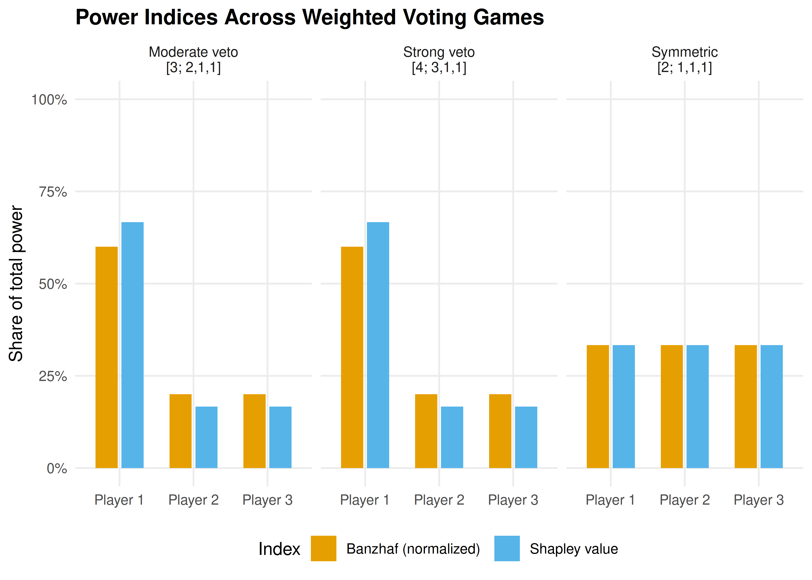

11 The GameTheory Package
A conceptual survey of the GameTheory R package for cooperative game theory, followed by from-scratch implementations of the Shapley value, Banzhaf index, and related solution concepts using base R and tidyverse.
Learning objectives
- Understand the API and capabilities of the GameTheory R package for cooperative game theory.
- Implement the Shapley value from scratch by enumerating all player permutations.
- Compute the Banzhaf power index for weighted voting games using base R.
- Compare computational results with closed-form analytical formulas.
11.1 Motivation
Consider the United Nations Security Council, where five permanent members hold veto power and ten non-permanent members do not. How much real power does each member wield? Raw vote counts are misleading — a permanent member’s veto makes it far more influential than a simple headcount suggests. The Shapley value, a cornerstone of cooperative game theory, provides a principled answer: it measures each player’s average marginal contribution across all possible orderings of coalition formation.
The GameTheory package on CRAN provides efficient, well-tested implementations of these computations. However, since it is not available in our current environment, this chapter first surveys its API conceptually and then implements equivalent functionality from scratch. Building these algorithms by hand deepens understanding of the combinatorial machinery behind cooperative solution concepts.
11.2 Theory
11.2.1 Cooperative games and characteristic functions
A transferable utility (TU) cooperative game is a pair \((N, v)\) where \(N = \{1, 2, \ldots, n\}\) is the set of players and \(v : 2^N \to \mathbb{R}\) is the characteristic function satisfying \(v(\emptyset) = 0\). The value \(v(S)\) represents the total payoff that coalition \(S \subseteq N\) can guarantee for itself.
Definition: Weighted Voting Game
A weighted voting game \([q; w_1, w_2, \ldots, w_n]\) has quota \(q\) and player weights \(w_i\). A coalition \(S\) is winning if \(\sum_{i \in S} w_i \geq q\), giving \(v(S) = 1\); otherwise \(v(S) = 0\).
11.2.2 The Shapley value
The Shapley value (Shapley, 1953) assigns to each player \(i\) a payoff \(\phi_i(v)\) representing their expected marginal contribution:
\[\begin{equation} \phi_i(v) = \sum_{S \subseteq N \setminus \{i\}} \frac{|S|!\,(n - |S| - 1)!}{n!} \left[ v(S \cup \{i\}) - v(S) \right] \tag{9.2} \end{equation}\]
Equivalently, \(\phi_i(v)\) is the average of player \(i\)’s marginal contribution \(v(S \cup \{i\}) - v(S)\) over all permutations of \(N\), where \(S\) is the set of players who precede \(i\) in the permutation.
Theorem: Shapley’s Characterization
The Shapley value is the unique allocation rule satisfying efficiency (\(\sum_i \phi_i = v(N)\)), symmetry, additivity, and the null player property.
11.2.3 The Banzhaf power index
The Banzhaf power index measures power by counting the number of coalitions in which a player is pivotal (turning a losing coalition into a winning one), divided by the total number of coalitions each player could join:
\[\begin{equation} \beta_i = \frac{1}{2^{n-1}} \sum_{S \subseteq N \setminus \{i\}} \left[ v(S \cup \{i\}) - v(S) \right] \tag{11.1} \end{equation}\]
Unlike the Shapley value, the raw Banzhaf indices do not necessarily sum to \(v(N)\). The normalized Banzhaf index divides each \(\beta_i\) by \(\sum_j \beta_j\).
11.2.4 The GameTheory package API
The GameTheory package provides functions including:
-
DefineGame()— create a cooperative game from a characteristic function vector. -
ShapleyValue()— compute the Shapley value for any TU game. -
Nucleolus()— find the nucleolus (the allocation minimizing maximum dissatisfaction). -
Core()— compute and check non-emptiness of the core. -
BanzhafValue()— compute the Banzhaf power index.
Since this package is not installed, we now implement these concepts from scratch.
11.3 Implementation in R
11.3.1 Defining a characteristic function
We represent the characteristic function as a named numeric vector indexed by coalition labels. For \(n\) players, there are \(2^n - 1\) non-empty coalitions.
# Build characteristic function for a weighted voting game
weighted_voting_game <- function(quota, weights) {
n <- length(weights)
players <- seq_len(n)
# Enumerate all 2^n subsets (including empty set)
v <- numeric(2^n)
coalition_labels <- character(2^n)
for (k in 0:(2^n - 1)) {
members <- players[as.logical(intToBits(k)[1:n])]
coalition_labels[k + 1] <- paste(members, collapse = ",")
if (length(members) > 0 && sum(weights[members]) >= quota) {
v[k + 1] <- 1
}
}
names(v) <- coalition_labels
v
}
# Three-player weighted voting game: Player 1 has veto power
weights <- c(3, 1, 1)
quota <- 4
v <- weighted_voting_game(quota, weights)
cat("Characteristic function [4; 3, 1, 1]:\n")#> Characteristic function [4; 3, 1, 1]:
v[v > 0 | names(v) == ""]#> 1,2 1,3 1,2,3
#> 0 1 1 111.3.2 Computing the Shapley value via permutations
# Generate all permutations of n elements
all_permutations <- function(n) {
if (n == 1) return(matrix(1, nrow = 1, ncol = 1))
prev <- all_permutations(n - 1)
result <- matrix(0, nrow = factorial(n), ncol = n)
idx <- 1
for (i in seq_len(nrow(prev))) {
for (pos in seq_len(n)) {
new_perm <- append(prev[i, ], n, after = pos - 1)
result[idx, ] <- new_perm
idx <- idx + 1
}
}
result
}
# Shapley value by averaging marginal contributions over all permutations
shapley_value <- function(v, n) {
perms <- all_permutations(n)
phi <- numeric(n)
for (r in seq_len(nrow(perms))) {
perm <- perms[r, ]
coalition <- integer(0)
for (pos in seq_along(perm)) {
player <- perm[pos]
# Value of coalition before player joins
if (length(coalition) == 0) {
v_before <- 0
} else {
key <- paste(sort(coalition), collapse = ",")
v_before <- v[key]
}
# Value after player joins
coalition <- c(coalition, player)
key_after <- paste(sort(coalition), collapse = ",")
v_after <- v[key_after]
# Marginal contribution
phi[player] <- phi[player] + (v_after - v_before)
}
}
phi / nrow(perms)
}
shapley <- shapley_value(v, 3)
names(shapley) <- paste("Player", 1:3)
cat("Shapley values for [4; 3, 1, 1]:\n")#> Shapley values for [4; 3, 1, 1]:
print(shapley)#> Player 1 Player 2 Player 3
#> 0.667 0.167 0.167#>
#> Sum of Shapley values: 1.0000 (should equal v(N) = 1)11.3.3 Shapley value via the analytical formula
# Shapley value using the combinatorial formula from \@ref(eq:shapley-value)
shapley_value_formula <- function(v, n) {
players <- seq_len(n)
phi <- numeric(n)
for (i in players) {
others <- setdiff(players, i)
# Enumerate all subsets of others
for (k in 0:(2^(n - 1) - 1)) {
members <- others[as.logical(intToBits(k)[1:(n - 1)])]
s <- length(members)
weight <- factorial(s) * factorial(n - s - 1) / factorial(n)
# v(S union {i}) - v(S)
key_with <- paste(sort(c(members, i)), collapse = ",")
key_without <- if (length(members) == 0) "" else
paste(sort(members), collapse = ",")
marginal <- v[key_with] - ifelse(key_without == "", 0, v[key_without])
phi[i] <- phi[i] + weight * marginal
}
}
phi
}
shapley_formula <- shapley_value_formula(v, 3)
names(shapley_formula) <- paste("Player", 1:3)
cat("Shapley values (analytical formula):\n")#> Shapley values (analytical formula):
print(shapley_formula)#> Player 1 Player 2 Player 3
#> 0.667 0.167 0.167#>
#> Maximum difference from permutation method: 011.3.4 Computing the Banzhaf power index
banzhaf_index <- function(v, n) {
players <- seq_len(n)
beta <- numeric(n)
for (i in players) {
others <- setdiff(players, i)
swings <- 0
for (k in 0:(2^(n - 1) - 1)) {
members <- others[as.logical(intToBits(k)[1:(n - 1)])]
key_with <- paste(sort(c(members, i)), collapse = ",")
key_without <- if (length(members) == 0) "" else
paste(sort(members), collapse = ",")
marginal <- v[key_with] - ifelse(key_without == "", 0, v[key_without])
swings <- swings + marginal
}
beta[i] <- swings / 2^(n - 1)
}
beta
}
banzhaf <- banzhaf_index(v, 3)
names(banzhaf) <- paste("Player", 1:3)
cat("Raw Banzhaf indices for [4; 3, 1, 1]:\n")#> Raw Banzhaf indices for [4; 3, 1, 1]:
print(banzhaf)#> Player 1 Player 2 Player 3
#> 0.75 0.25 0.25
cat("\nNormalized Banzhaf indices:\n")#>
#> Normalized Banzhaf indices:#> Player 1 Player 2 Player 3
#> 0.6 0.2 0.211.3.5 Comparing power indices across coalition structures
games <- list(
"Symmetric\n[2; 1,1,1]" = list(quota = 2, weights = c(1, 1, 1)),
"Moderate veto\n[3; 2,1,1]" = list(quota = 3, weights = c(2, 1, 1)),
"Strong veto\n[4; 3,1,1]" = list(quota = 4, weights = c(3, 1, 1))
)
results <- map_dfr(names(games), function(game_name) {
g <- games[[game_name]]
v_game <- weighted_voting_game(g$quota, g$weights)
shap <- shapley_value_formula(v_game, 3)
banz <- banzhaf_index(v_game, 3)
banz_norm <- banz / sum(banz)
tibble(
game = game_name,
player = rep(paste("Player", 1:3), 2),
index = rep(c("Shapley value", "Banzhaf (normalized)"), each = 3),
value = c(shap, banz_norm)
)
})
p_comparison <- ggplot(results,
aes(x = player, y = value, fill = index)) +
geom_col(position = position_dodge(width = 0.7), width = 0.6) +
facet_wrap(~ game, nrow = 1) +
scale_fill_manual(values = c(okabe_ito[1], okabe_ito[2])) +
scale_y_continuous(labels = label_percent(), limits = c(0, 1)) +
theme_publication() +
labs(
title = "Power Indices Across Weighted Voting Games",
x = NULL,
y = "Share of total power",
fill = "Index"
)
p_comparison
Figure 11.1: Shapley values and normalized Banzhaf indices for three different weighted voting games with three players. The veto player (Player 1) commands disproportionate power relative to their weight share.
save_pub_fig(p_comparison, "shapley-comparison", width = 7, height = 5)As 11.1 shows, when the game is symmetric all players have equal power. As Player 1’s weight advantage grows, both the Shapley value and the Banzhaf index assign them a disproportionately larger share of power — exceeding their raw weight share. In the strong veto game \([4; 3, 1, 1]\), Player 1 is essential for every winning coalition, which both indices capture clearly.
11.4 Worked example
11.4.1 A simplified EU Council vote
Consider a simplified three-country EU voting scenario: Germany (weight 4), France (weight 3), and Belgium (weight 1). A proposal passes with a quota of 5 votes.
eu_weights <- c(4, 3, 1)
eu_quota <- 5
eu_v <- weighted_voting_game(eu_quota, eu_weights)
cat("Game: [5; 4, 3, 1]\n\n")#> Game: [5; 4, 3, 1]
cat("Winning coalitions:\n")#> Winning coalitions:
winning <- eu_v[eu_v == 1 & nchar(names(eu_v)) > 0]
for (name in names(winning)) {
members <- as.integer(strsplit(name, ",")[[1]])
countries <- c("Germany", "France", "Belgium")[members]
cat(sprintf(" {%s} (total weight = %d)\n",
paste(countries, collapse = ", "),
sum(eu_weights[members])))
}#> {Germany, France} (total weight = 7)
#> {Germany, Belgium} (total weight = 5)
#> {Germany, France, Belgium} (total weight = 8)
eu_shapley <- shapley_value_formula(eu_v, 3)
eu_banzhaf <- banzhaf_index(eu_v, 3)
eu_banzhaf_norm <- eu_banzhaf / sum(eu_banzhaf)
results_eu <- tibble(
Country = c("Germany", "France", "Belgium"),
Weight = eu_weights,
`Weight share` = eu_weights / sum(eu_weights),
`Shapley value` = eu_shapley,
`Banzhaf (norm.)` = eu_banzhaf_norm
)
results_eu |>
gt() |>
fmt_percent(columns = c(`Weight share`, `Shapley value`, `Banzhaf (norm.)`),
decimals = 1) |>
tab_header(title = "Power analysis: [5; 4, 3, 1]")| Power analysis: [5; 4, 3, 1] | ||||
| Country | Weight | Weight share | Shapley value | Banzhaf (norm.) |
|---|---|---|---|---|
| Germany | 4 | 50.0% | 66.7% | 60.0% |
| France | 3 | 37.5% | 16.7% | 20.0% |
| Belgium | 1 | 12.5% | 16.7% | 20.0% |
Step-by-step Shapley calculation for Belgium (Player 3):
There are \(3! = 6\) permutations. Belgium is pivotal only when it joins a coalition whose weight is in the range \([4, 4]\) — exactly enough that adding Belgium’s weight of 1 reaches the quota of 5. This occurs when Germany alone precedes Belgium.
perms <- all_permutations(3)
cat("All permutations and Belgium's marginal contribution:\n\n")#> All permutations and Belgium's marginal contribution:
for (r in seq_len(nrow(perms))) {
perm <- perms[r, ]
countries <- c("Germany", "France", "Belgium")[perm]
pos_belgium <- which(perm == 3)
predecessors <- if (pos_belgium > 1) perm[1:(pos_belgium - 1)] else integer(0)
if (length(predecessors) == 0) {
w_before <- 0
} else {
w_before <- sum(eu_weights[predecessors])
}
w_after <- w_before + eu_weights[3]
pivotal <- (w_before < eu_quota) && (w_after >= eu_quota)
cat(sprintf(" %s -> %s -> %s | Before Belgium: weight=%d, After: %d | %s\n",
countries[1], countries[2], countries[3],
w_before, w_after,
ifelse(pivotal, "PIVOTAL", "")))
}#> Belgium -> France -> Germany | Before Belgium: weight=0, After: 1 |
#> France -> Belgium -> Germany | Before Belgium: weight=3, After: 4 |
#> France -> Germany -> Belgium | Before Belgium: weight=7, After: 8 |
#> Belgium -> Germany -> France | Before Belgium: weight=0, After: 1 |
#> Germany -> Belgium -> France | Before Belgium: weight=4, After: 5 | PIVOTAL
#> Germany -> France -> Belgium | Before Belgium: weight=7, After: 8 |#>
#> Shapley value for Belgium: 1/6 = 0.1667This confirms that Belgium is pivotal in exactly one of the six orderings (where Germany precedes Belgium and France follows), giving \(\phi_3 = 1/6 \approx 16.7\%\) — notably higher than its raw weight share of \(1/8 = 12.5\%\).
11.5 Extensions
- Larger games. For \(n > 10\) players, permutation enumeration becomes infeasible (\(n!\) grows super-exponentially). Sampling-based estimators randomly draw permutations and average marginal contributions, yielding Monte Carlo Shapley values with confidence intervals.
- The nucleolus provides a complementary solution concept that minimizes the maximum excess (dissatisfaction) of any coalition. We implement it in 12 using linear programming techniques.
- Network games extend cooperative games by restricting which coalitions can form based on a communication graph.
- Non-transferable utility (NTU) games relax the assumption that utility can be freely transferred among coalition members, leading to concepts such as the NTU Shapley value.
Exercises
Unanimity games. The unanimity game \(u_T\) for coalition \(T\) assigns \(v(S) = 1\) if \(T \subseteq S\) and \(v(S) = 0\) otherwise. Prove analytically that \(\phi_i(u_T) = 1/|T|\) for \(i \in T\) and \(\phi_i(u_T) = 0\) otherwise. Then verify your proof computationally using the
shapley_value()function for \(T = \{1, 2\}\) with \(n = 3\) players.Four-player voting. Consider the weighted voting game \([6;\; 4, 3, 2, 1]\). Compute the Shapley value and normalized Banzhaf index for all four players using the functions from 11.3. Which player has zero power according to both indices? Explain why intuitively.
Monte Carlo Shapley. For larger games, exact computation is infeasible. Write a function
shapley_monte_carlo(v, n, num_samples)that estimates the Shapley value by randomly samplingnum_samplespermutations (usingsample()). Test it on the game \([4;\; 3, 1, 1]\) and plot how the estimates converge to the exact values asnum_samplesincreases from 100 to 10,000.
Solutions appear in D.